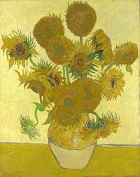
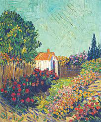

Vincent van Gogh
Vincent Willem van Gogh was a Dutch Post-Impressionist painter who posthumously became one of the most famous and influential figures in Western art history. In a decade, he created about 2,100 artworks, including around 860 oil paintings, most of which date from the last two years of his life. They include landscapes, still lifes, portraits and self-portraits, and are characterised by bold colours and dramatic, impulsive and expressive brushwork that contributed to the foundations of modern art. Not commercially successful, he struggled with severe depression and poverty, eventually leading to his suicide at age thirty-seven. Born into an upper-middle-class family, Van Gogh drew as a child and was serious, quiet, and thoughtful. As a young man, he worked as an art dealer, often traveling, but became depressed after he was transferred to London. He turned to religion and spent time as a Protestant missionary in southern Belgium. He drifted in ill health and solitude before taking up painting in 1881, having moved back home with his parents. His younger brother Theo supported him financially, and the two kept a long correspondence by letter.


- 
- 